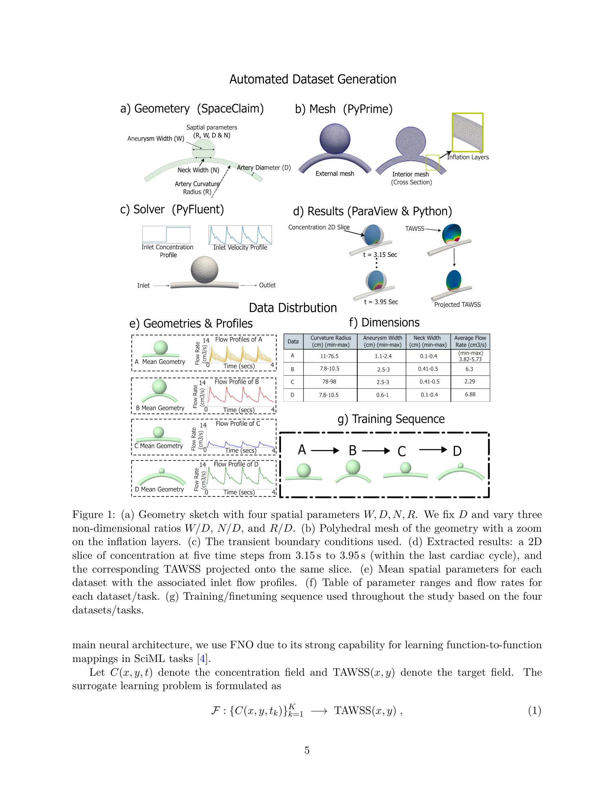
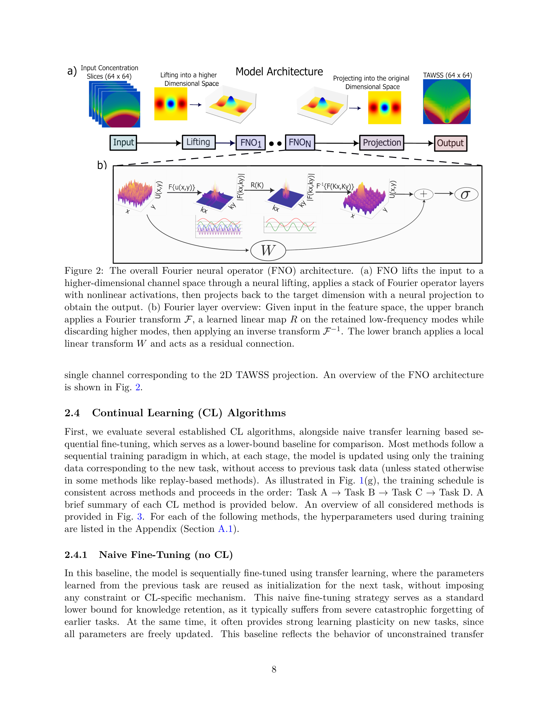
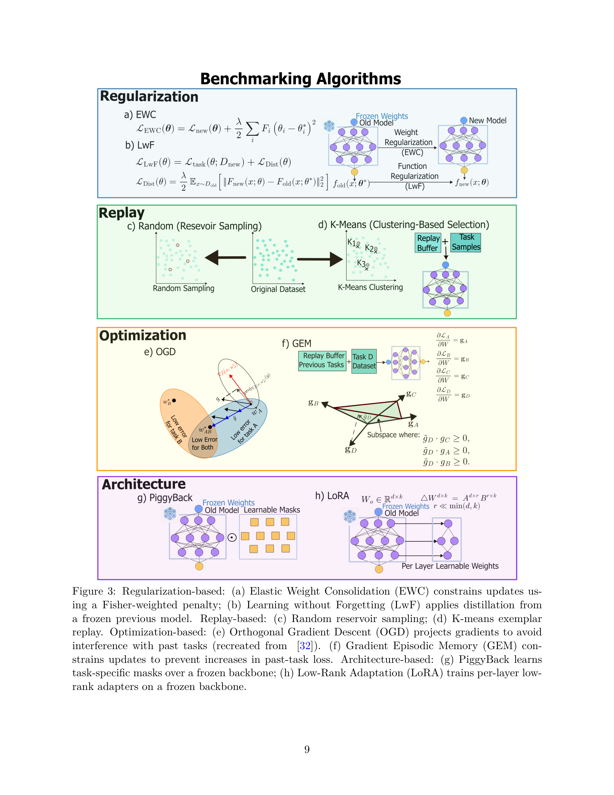

Figure 1
Fourier Neural Operator(FNO)에 단일 태스크별 레이어를 추가하는 SLE-FNO를 제안하여, 과학적 기계학습 서로게이트 모델의 지속적 학습(continual learning) 시 catastrophic forgetting 없이 새로운 분포 외(OOD) 태스크에 효율적으로 적응하는 방법론이다.

Figure 2
과학적 기계학습(SciML)에서 서로게이트 모델은 통상 학습 데이터와 동일한 분포의 추론 데이터를 가정하지만, 실제 환경에서는 새로운 실험 조건이나 시뮬레이션 영역이 기존 학습 분포를 벗어나는 경우가 빈번하다. 특히 유체역학에서는 기하학적 변화, 경계 조건, 유동 레짐 변화가 비선형적으로 해를 변화시킨다. 기존 fine-tuning은 catastrophic forgetting을 야기하고, 전체 재학습은 계산 비용이 과도하다. 따라서 이전 데이터 접근 없이도 새 태스크에 적응하면서 기존 지식을 보존하는 continual learning 프레임워크가 필요하다.

Figure 3
과학적 기계학습에서 상대적으로 덜 탐구된 continual learning 문제를 체계적으로 다루었다는 점에서 의의가 크다. FNO의 스펙트럴 구조를 활용한 SLE-FNO 설계는 직관적이면서도 효과적이며, 태스크당 1.5~4.4% 파라미터 추가만으로 zero forgetting을 달성한 것은 인상적이다. 특히 EWC, LwF, OGD, GEM, Replay, PiggyBack, LoRA 등 주요 CL 방법론을 동일 조건에서 비교한 포괄적 벤치마크는 SciML 커뮤니티에 유용한 참조점을 제공한다. KPCA 기반 task-agnostic 라우팅의 100% 정확도도 주목할 만하다. 다만, 단일 응용 문제와 소수 태스크에 한정된 실험으로 일반화 가능성에 대한 의문이 남으며, 장기적 태스크 축적 시의 확장성에 대한 추가 연구가 필요하다. 전반적으로 SciML에서의 CL 연구의 좋은 출발점을 제시하는 논문이다.